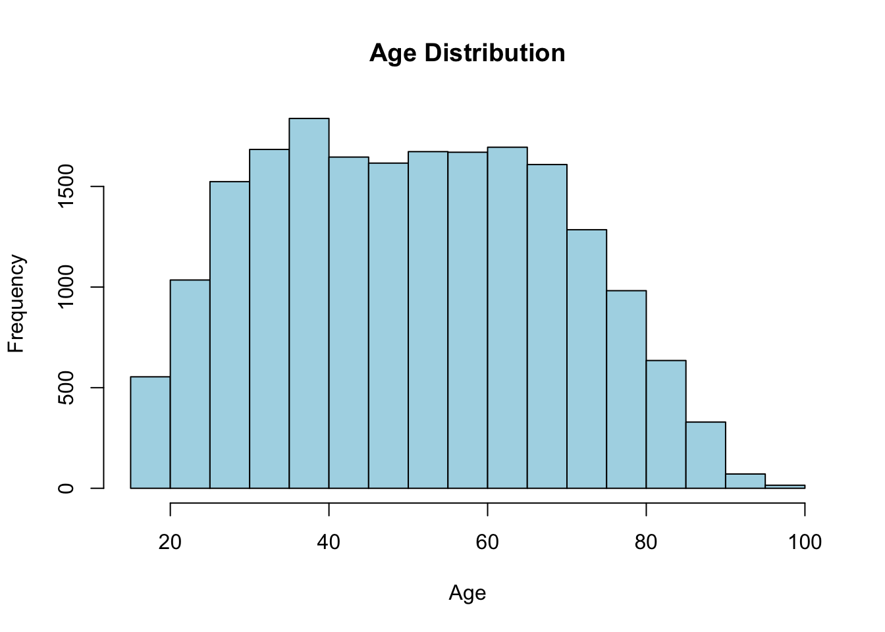
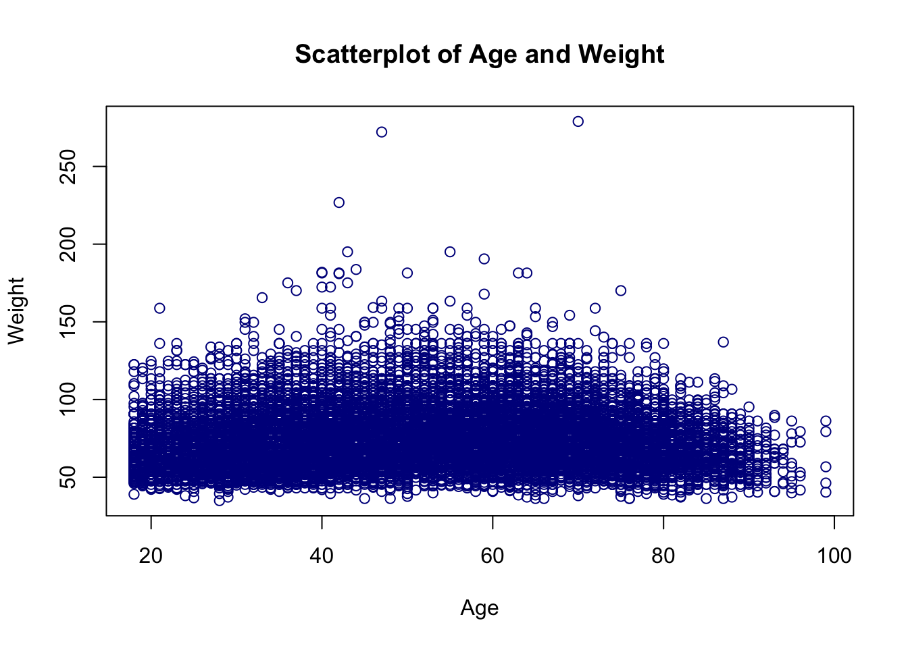
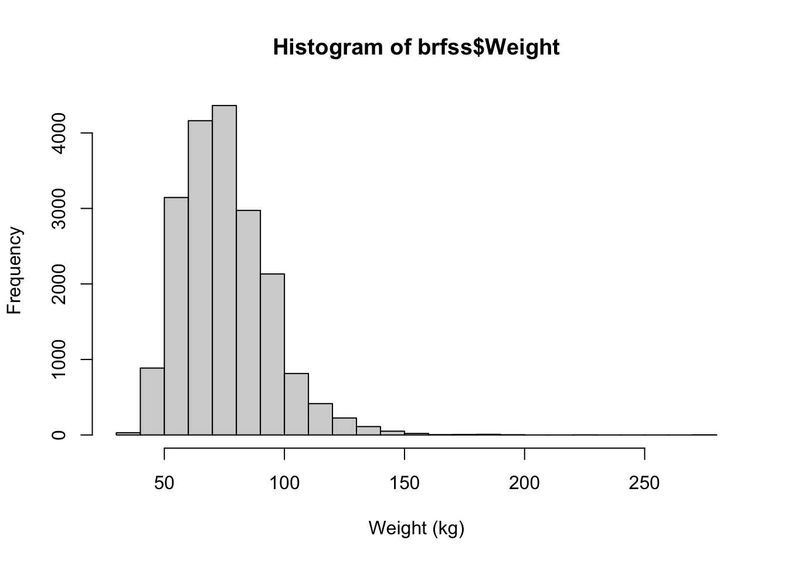
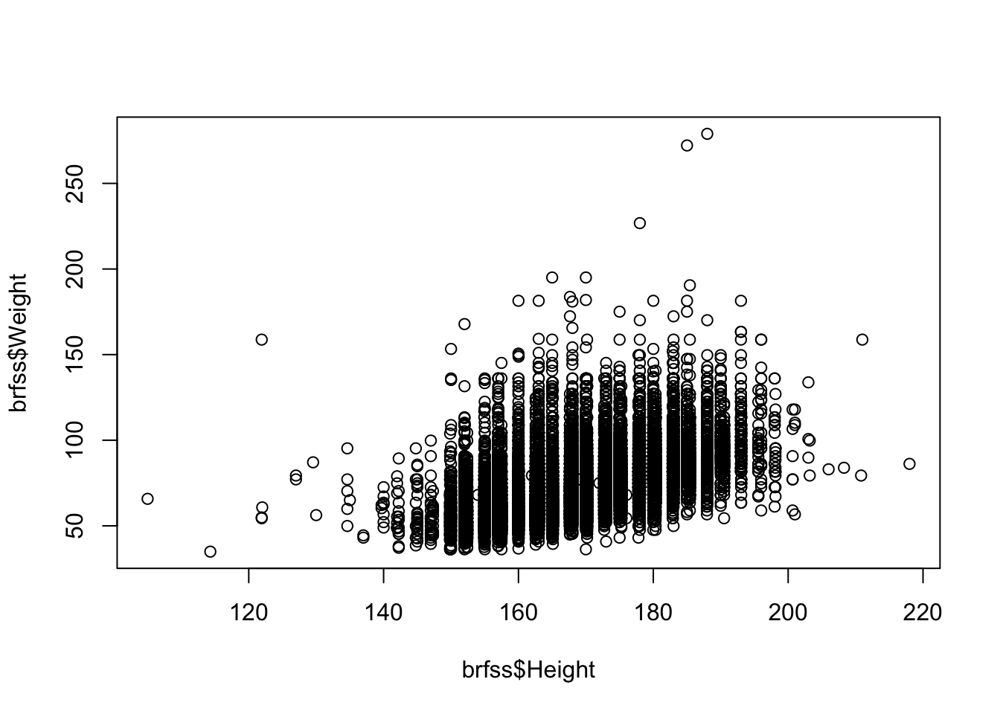
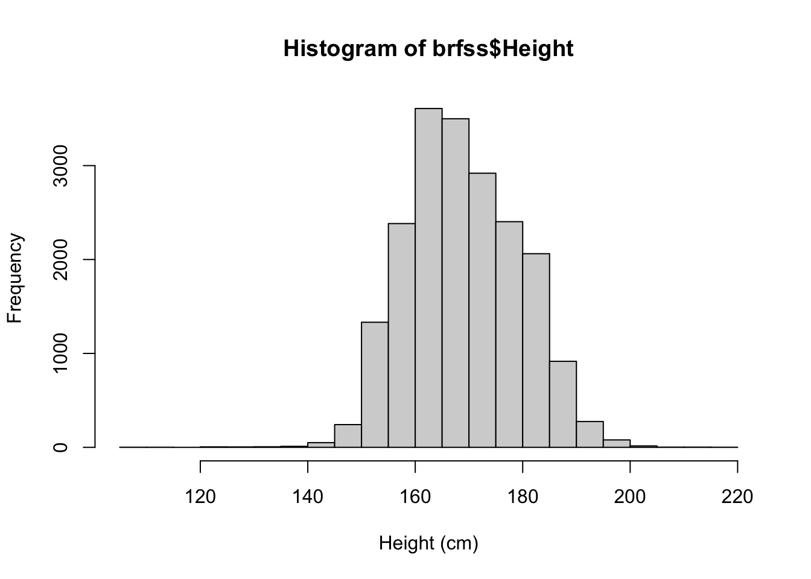
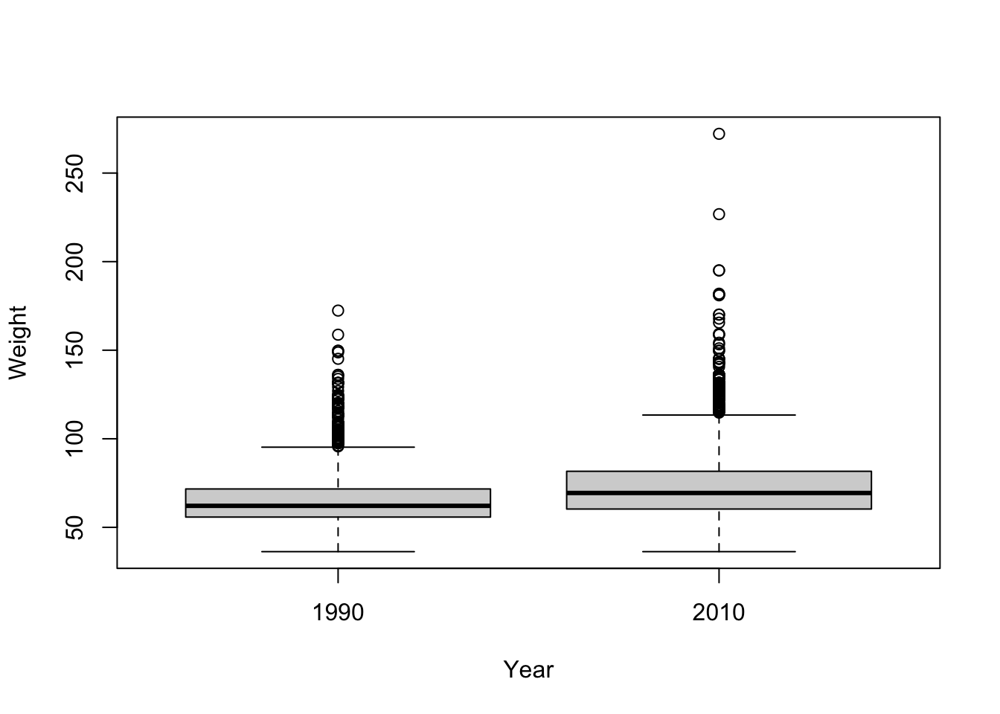
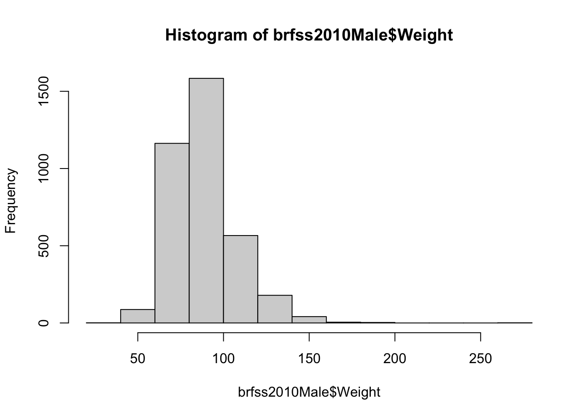
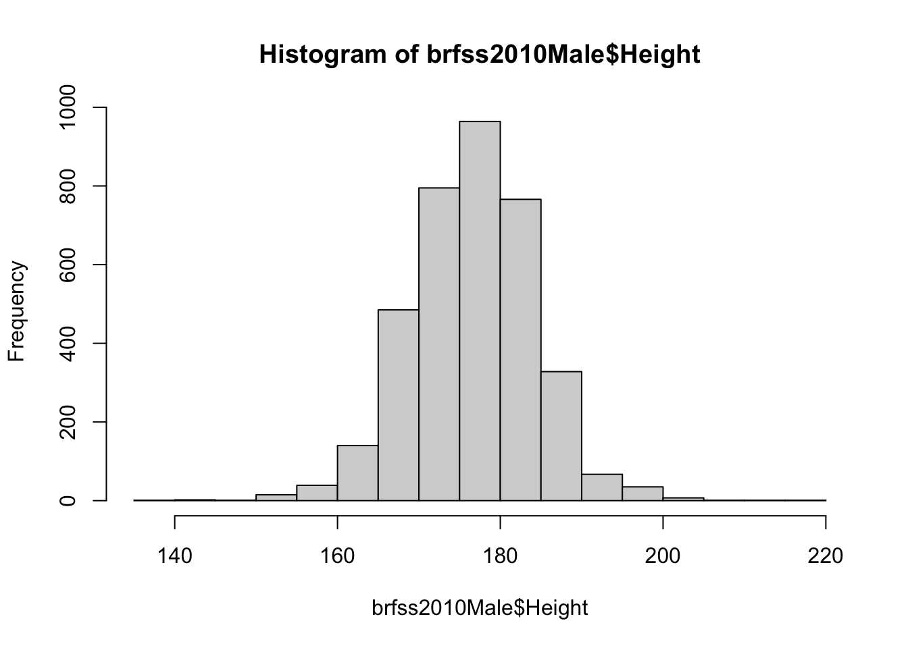
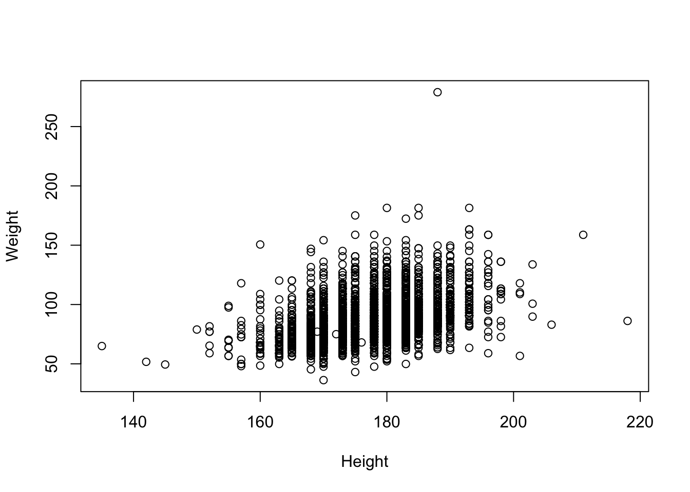
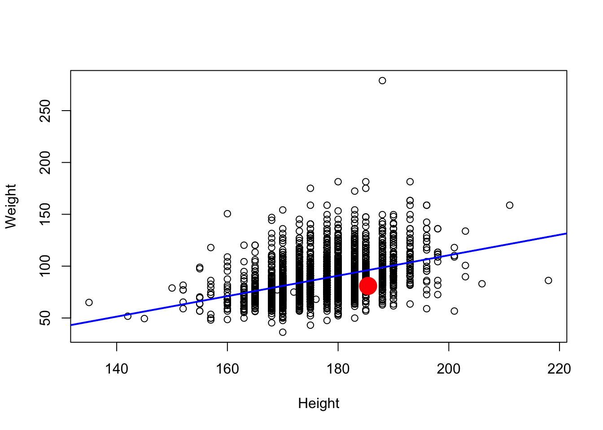

download.file('https://raw.githubusercontent.com/seandavi/ITR/master/BRFSS-subset.csv',
destfile = 'BRFSS-subset.csv')14 Case Study: Behavioral Risk Factor Surveillance System
14.1 A Case Study on the Behavioral Risk Factor Surveillance System
The Behavioral Risk Factor Surveillance System (BRFSS) is a large-scale health survey conducted annually by the Centers for Disease Control and Prevention (CDC) in the United States. The BRFSS collects information on various health-related behaviors, chronic health conditions, and the use of preventive services among the adult population (18 years and older) through telephone interviews. The main goal of the BRFSS is to identify and monitor the prevalence of risk factors associated with chronic diseases, inform public health policies, and evaluate the effectiveness of health promotion and disease prevention programs. The data collected through BRFSS is crucial for understanding the health status and needs of the population, and it serves as a valuable resource for researchers, policy makers, and healthcare professionals in making informed decisions and designing targeted interventions.
In this chapter, we will walk through an exploratory data analysis (EDA) of the Behavioral Risk Factor Surveillance System dataset using R. EDA is an important step in the data analysis process, as it helps you to understand your data, identify trends, and detect any anomalies before performing more advanced analyses. We will use various R functions and packages to explore the dataset, with a focus on active learning and hands-on experience.
14.2 Loading the Dataset
First, let’s load the dataset into R. We will use the read.csv() function from the base R package to read the data and store it in a data frame called brfss. Make sure the CSV file is in your working directory, or provide the full path to the file.
First, we need to get the data. Either download the data from THIS LINK or have R do it directly from the command-line (preferred):
path <- file.choose() # look for BRFSS-subset.csvstopifnot(file.exists(path))
brfss <- read.csv(path)14.3 Inspecting the Data
Once the data is loaded, let’s take a look at the first few rows of the dataset using the head() function:
head(brfss) Age Weight Sex Height Year
1 31 48.98798 Female 157.48 1990
2 57 81.64663 Female 157.48 1990
3 43 80.28585 Male 177.80 1990
4 72 70.30682 Male 170.18 1990
5 31 49.89516 Female 154.94 1990
6 58 54.43108 Female 154.94 1990This will display the first six rows of the dataset, allowing you to get a feel for the data structure and variable types.
Next, let’s check the dimensions of the dataset using the dim() function:
dim(brfss)[1] 20000 5This will return the number of rows and columns in the dataset, which is important to know for subsequent analyses.
14.4 Summary Statistics
Now that we have a basic understanding of the data structure, let’s calculate some summary statistics. The summary() function in R provides a quick overview of the main statistics for each variable in the dataset:
summary(brfss) Age Weight Sex Height
Min. :18.00 Min. : 34.93 Length:20000 Min. :105.0
1st Qu.:36.00 1st Qu.: 61.69 Class :character 1st Qu.:162.6
Median :51.00 Median : 72.57 Mode :character Median :168.0
Mean :50.99 Mean : 75.42 Mean :169.2
3rd Qu.:65.00 3rd Qu.: 86.18 3rd Qu.:177.8
Max. :99.00 Max. :278.96 Max. :218.0
NA's :139 NA's :649 NA's :184
Year
Min. :1990
1st Qu.:1990
Median :2000
Mean :2000
3rd Qu.:2010
Max. :2010
This will display the minimum, first quartile, median, mean, third quartile, and maximum for each numeric variable, and the frequency counts for each factor level for categorical variables.
14.5 Data Visualization
Visualizing the data can help you identify patterns and trends in the dataset. Let’s start by creating a histogram of the Age variable using the hist() function.
This will create a histogram showing the frequency distribution of ages in the dataset. You can customize the appearance of the histogram by adjusting the parameters within the hist() function.
hist(brfss$Age, main = "Age Distribution",
xlab = "Age", col = "lightblue")
What are the options for a histogram?
The hist() function has many options. For example, you can change the number of bins, the color of the bars, the title, and the x-axis label. You can also add a vertical line at the mean or median, or add a normal curve to the histogram. For more information, type ?hist in the R console.
More generally, it is important to understand the options available for each function you use. You can do this by reading the documentation for the function, which can be accessed by typing ?function_name or help("function_name")in the R console.
Next, let’s create a boxplot to compare the distribution of Weight between males and females. We will use the boxplot() function for this. This will create a boxplot comparing the weight distribution between males and females. You can customize the appearance of the boxplot by adjusting the parameters within the boxplot() function.
14.6 Analyzing Relationships Between Variables
To further explore the data, let’s investigate the relationship between age and weight using a scatterplot. We will use the plot() function for this:
This will create a scatterplot of age and weight, allowing you to visually assess the relationship between these two variables.
plot(brfss$Age, brfss$Weight, main = "Scatterplot of Age and Weight",
xlab = "Age", ylab = "Weight", col = "darkblue") 
To quantify the strength of the relationship between age and weight, we can calculate the correlation coefficient using the cor() function:
This will return the correlation coefficient between age and weight, which can help you determine whether there is a linear relationship between these variables.
cor(brfss$Age, brfss$Weight)[1] NAWhy does cor() give a value of NA? What can we do about it? A quick glance at help("cor") will give you the answer.
cor(brfss$Age, brfss$Weight, use = "complete.obs")[1] 0.0269998914.7 Exercises
-
What is the mean weight in this dataset? How about the median? What is the difference between the two? What does this tell you about the distribution of weights in the dataset?
-
Given the findings about the
meanandmedianin the previous exercise, use thehist()function to create a histogram of the weight distribution in this dataset. How would you describe the shape of this distribution?Show answer
hist(brfss$Weight, xlab="Weight (kg)", breaks = 30)
-
Use
plot()to examine the relationship between height and weight in this dataset.Show answer
plot(brfss$Height, brfss$Weight)
-
What is the correlation between height and weight? What does this tell you about the relationship between these two variables?
Show answer
cor(brfss$Height, brfss$Weight, use = "complete.obs")[1] 0.5140928 -
Create a histogram of the height distribution in this dataset. How would you describe the shape of this distribution?
Show answer
hist(brfss$Height, xlab="Height (cm)", breaks = 30)
14.8 Conclusion
In this chapter, we have demonstrated how to perform an exploratory data analysis on the Behavioral Risk Factor Surveillance System dataset using R. We covered data loading, inspection, summary statistics, visualization, and the analysis of relationships between variables. By actively engaging with the R code and data, you have gained valuable experience in using R for EDA and are well-equipped to tackle more complex analyses in your future work.
Remember that EDA is just the beginning of the data analysis process, and further statistical modeling and hypothesis testing will likely be necessary to draw meaningful conclusions from your data. However, EDA is a crucial step in understanding your data and informing your subsequent analyses.
14.9 Learn about the data
Using the data exploration techniques you have seen to explore the brfss dataset.
- summary()
- dim()
- colnames()
- head()
- tail()
- class()
- View()
You may want to investigate individual columns visually using plotting like hist(). For categorical data, consider using something like table().
14.10 Clean data
R read Year as an integer value, but it’s really a factor
brfss$Year <- factor(brfss$Year)14.11 Weight in 1990 vs. 2010 Females
- Create a subset of the data
brfssFemale <- brfss[brfss$Sex == "Female",]
summary(brfssFemale) Age Weight Sex Height
Min. :18.00 Min. : 36.29 Length:12039 Min. :105.0
1st Qu.:37.00 1st Qu.: 57.61 Class :character 1st Qu.:157.5
Median :52.00 Median : 65.77 Mode :character Median :163.0
Mean :51.92 Mean : 69.05 Mean :163.3
3rd Qu.:67.00 3rd Qu.: 77.11 3rd Qu.:168.0
Max. :99.00 Max. :272.16 Max. :200.7
NA's :103 NA's :560 NA's :140
Year
1990:5718
2010:6321
- Visualize
plot(Weight ~ Year, brfssFemale)
- Statistical test
t.test(Weight ~ Year, brfssFemale)
Welch Two Sample t-test
data: Weight by Year
t = -27.133, df = 11079, p-value < 2.2e-16
alternative hypothesis: true difference in means between group 1990 and group 2010 is not equal to 0
95 percent confidence interval:
-8.723607 -7.548102
sample estimates:
mean in group 1990 mean in group 2010
64.81838 72.95424 14.12 Weight and height in 2010 Males
- Create a subset of the data
Age Weight Sex Height Year
Min. :18.00 Min. : 36.29 Length:3679 Min. :135 1990: 0
1st Qu.:45.00 1st Qu.: 77.11 Class :character 1st Qu.:173 2010:3679
Median :57.00 Median : 86.18 Mode :character Median :178
Mean :56.25 Mean : 88.85 Mean :178
3rd Qu.:68.00 3rd Qu.: 99.79 3rd Qu.:183
Max. :99.00 Max. :278.96 Max. :218
NA's :30 NA's :49 NA's :31 - Visualize the relationship
hist(brfss2010Male$Weight)
hist(brfss2010Male$Height)
plot(Weight ~ Height, brfss2010Male)
- Fit a linear model (regression)
fit <- lm(Weight ~ Height, brfss2010Male)
fit
Call:
lm(formula = Weight ~ Height, data = brfss2010Male)
Coefficients:
(Intercept) Height
-86.8747 0.9873 Summarize as ANOVA table
anova(fit)Analysis of Variance Table
Response: Weight
Df Sum Sq Mean Sq F value Pr(>F)
Height 1 197664 197664 693.8 < 2.2e-16 ***
Residuals 3617 1030484 285
---
Signif. codes: 0 '***' 0.001 '**' 0.01 '*' 0.05 '.' 0.1 ' ' 1- Plot points, superpose fitted regression line; where am I?
plot(Weight ~ Height, brfss2010Male)
abline(fit, col="blue", lwd=2)
# Substitute your own weight and height...
points(73 * 2.54, 178 / 2.2, col="red", cex=4, pch=20)
- Class and available ‘methods’
- Diagnostics
plot(fit)
# Note that the "plot" above does not have a ".lm"
# However, R will use "plot.lm". Why?
?plot.lm